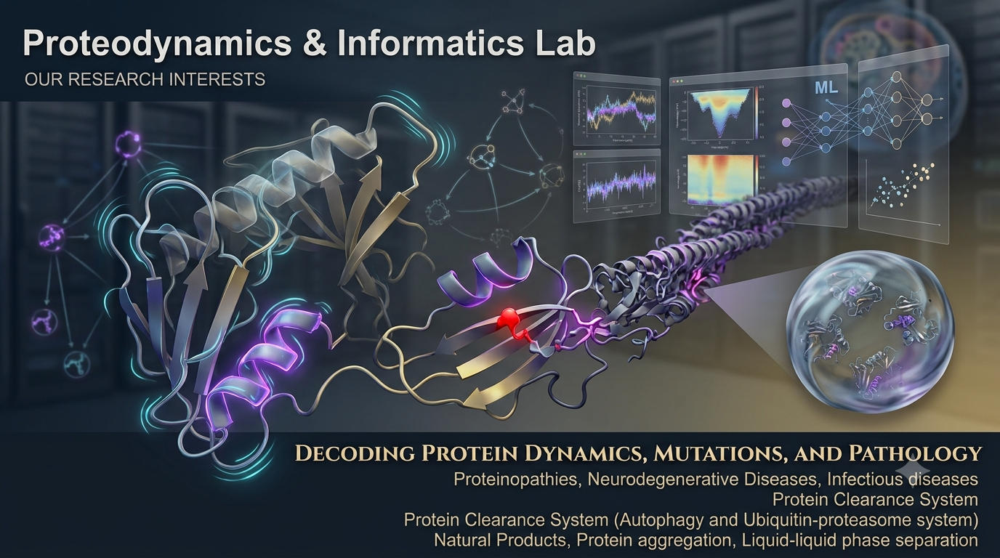

Structural biology has revolutionized our understanding of the molecular processes that drive life. Yet, a fundamental gap remains in our understanding of how and why proteins operate through specific dynamics, motions, and excited states. The primary objective of our research group is to decode the atomic basis of protein function — specifically, to map the structural motions that regulate the conformational transitions required for different biological functions and how a point (also known as missense) mutation affects these motions, and hence its conformational transition and a certain biological function, leading to a certain disease. In addition, our group is also interested in identifying novel compounds against different pathologies.
For this, our group harnesses in silico structural biological tools, including molecular dynamics (MD) simulations, etc., in combination with artificial intelligence (e.g., ML/DL). Additional tools we utilized include the Markov state model (MSM) for analyzing protein misfolding pathways.
Overall, our group is interested in —